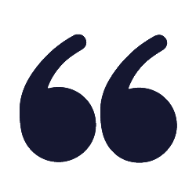

Isso não quer dizer que as competências técnicas não sejam ainda muito importantes. Significa que as competências socioemocionais estão cada vez mais sendo valorizadas como um diferencial, e sendo avaliadas como requisitos não só de contratação, mas como permanência ou desligamento de posições ocupacionais. A seguinte frase ilustra essa ideia:
Um quadrado laranja de moldura azul. No canto superior esquerdo, e inferior direito, o sinal de aspas em azul escuro.


“Atualmente as empresas contratam pelo currículo e demitem pelo comportamento. É como se as pessoas fossem contratadas graças às suas competências técnicas e demitidas em função da deficiência de competências socioemocionais” (Guilherme Junqueira, CEO da Gama Academy ).
Quais são?
Existe uma infinidade de maneiras de listar e categorizar as competências socioemocionais. Aqui apresentaremos duas possibilidades.
No Fórum Econômico Mundial de 2016, foram propostas as seguintes competências socioemocionais consideradas fundamentais em 2020:
ESQUEMA INTERATIVO, as palavras em movimento circular surgem uma após a outra como um rolo.